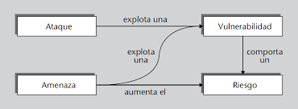

ACTIVIDAD 01: Análisis de un ciberataque real y su impacto empresarial
CNO V: Seguridad Informática | 30/01/2026
1. Introducción y Contexto
El ataque NotPetya (2017) es considerado uno de los ciberataques más devastadores de la historia. Aunque inicialmente parecía un ransomware común (Petya), resultó ser un malware destructivo (wiper) diseñado para borrar datos de forma irreversible. El ataque comenzó en Ucrania a través del software contable M.E.Doc y se propagó rápidamente por todo el mundo, afectando gravemente a la naviera danesa Maersk.
2. Tabla Técnica del Ataque
| Categoría | Descripción Detallada |
|---|---|
| Vector de Entrada | Actualización maliciosa del software contable ucraniano M.E.Doc. |
| Propagación | Uso de EternalBlue (SMB exploit) y Mimikatz para extraer credenciales y saltar entre redes. |
| Mecanismo de Daño | Cifrado del MFT (Master File Table) y sobrescritura del MBR (Master Boot Record). |
| Tipo de Malware | Wiper (Malware de borrado destructivo). |
3. Evidencia Visual y Documental: NotPetya
Vulnerabilidad

# Esquema de propagación y vulnerabilidades explotadas
Video Referenciado: Análisis del caos digital y costos económicos de NotPetya.
3. Evaluación del Impacto (Modelo CIA)
El impacto se evaluó bajo la triada de la seguridad informática:
- Confidencialidad: El ataque comprometió credenciales de administrador, permitiendo acceso no autorizado a nivel global.
- Integridad: Crítica. Los datos de los servidores no fueron solo cifrados, sino dañados permanentemente sin posibilidad de recuperación mediante llave.
- Disponibilidad: Parálisis total. Maersk tuvo que detener operaciones en 76 terminales portuarias, afectando la cadena de suministro global.
4. Impacto Económico y Recuperación
Maersk reportó pérdidas directas de entre $250 y $300 millones de USD. El proceso de recuperación incluyó:
- Reinstalación de 4,000 servidores nuevos.
- Sustitución de 45,000 computadoras personales.
- Reconfiguración de 2,500 aplicaciones empresariales.
5. Lecciones Aprendidas
La principal recomendación derivada de este caso es la segmentación de redes y la gestión crítica de parches de seguridad, así como la importancia de contar con respaldos offline (fuera de línea) que no puedan ser alcanzados por malware de propagación lateral.